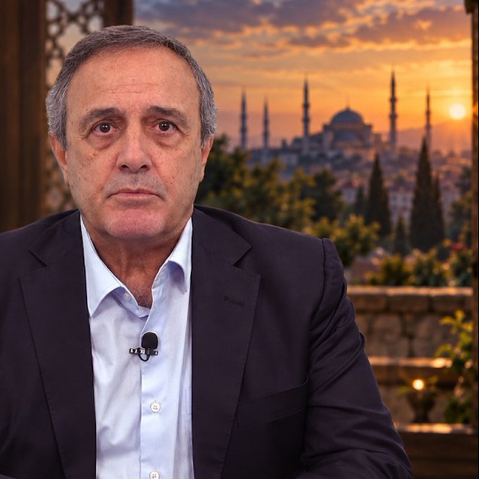

History and Contemplation
26 episodes
Turning points in Ottoman and Turkish history, with reflections on the present.
SEYF TV
History, literature, ideas and current affairs on one screen.
26 episodes
Turning points in Ottoman and Turkish history, with reflections on the present.

8 episodes
Family, youth, happiness and friendship: conversations at the heart of life with Hayati İnanç.

26 episodes
Brain, mind and behavior, where science meets wisdom.

25 episodes
Selected couplets from our classical poetry, with commentaries that touch the heart.

25 episodes
Lessons for everyday life from the hadiths of the Prophet ﷺ.

25 episodes
Little-discussed facts from late Ottoman and Republican history.

25 episodes
Imam Rabbani’s Maktubat is read letter by letter, with commentary in today’s language.

25 episodes
Our civilization’s approach to education: home, school and nurturing people.

25 episodes
Brief, clear answers to important questions of faith, ethics and life.

26 episodes
History, culture and current affairs with Orhan Baylan, speaking plainly.

3 episodes
The changing world order and the background to current affairs.

14 episodes
Brief, instructive scenes from our history.

10 episodes
Nasreddin Hodja’s humorous tales for today’s children and adults.

2 episodes
Our folk tales and stories of wisdom.

1 episodes
Other broadcasts and special content from Seyf TV.